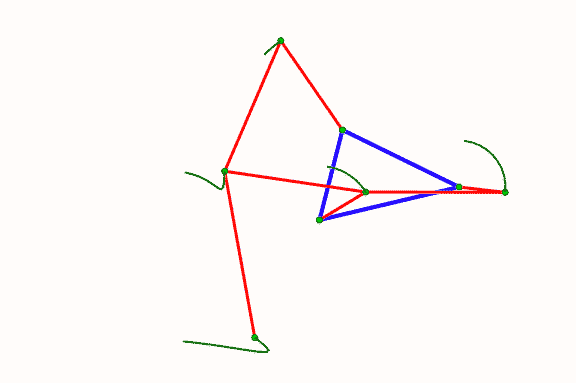
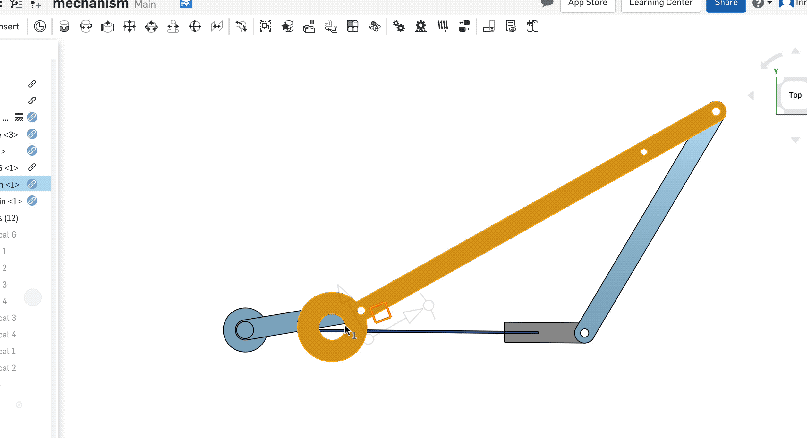

Mechanical Design

For this assignment, I modeled a sliding mechanism in On Shape and made it out of laser cut acrylic and plastic push in rivets.
Inspiration & Modeling
I started out this project by looking up different gifs of link mechanisms. I found the gif above of the Klann Linkage and decided to recreate it. According to Wikiepdia the Klann linkage is meant to look like "the gait of legged animal," but I also thought looked like it created a motion that, if had a string attached to it, would be something my cat would like to play with, so I decided to make the mechanism large enough so that it could move a string around enough to be a fun cat toy.
Source: Wikimedia Commons
{kind=link}
I started modeling this in OnShape by creating the links and rivets. I looked at the files that Joshua shared as a guide, but decided to recreate the shapes myself in order to learn how OnShape works.


Basic link shape (post-extrusion) and rivet (sketch mode) in OnShape. These pieces made up the mechanism.
Using Illustrator, I measured the length of the links in the gif so that I could match the same proportions. I then created variations of the original link part and started to assemble them.
In the end, I ran into too many problems with this design. I had issues figuring out in what order the links should go such that they don't stack in a different spot on their two rivets. I also struggled to find a way to link them together such that the circular motion I needed to crank the mechanism could be completed without hitting a link. Also, after a lot of trial and error, I learned that I needed to use the Cylindrical Mate instead of the Resolute mate (which doesn't allow for vertical motion). Even still, I ran out of time trying to model this properly and moved on to a simpler mechanism.
(You can see my attempts in the OnShape files I link to at the end. They're mechanisms in tabs other than my final assembly labeled "Abandoned Klann linkage attempt" #1, #2, and #3.)

One of my attempts are recrating the Klann linkage in OnShape. I had a lot of problems figuring out how to stack the links properly so that they didn't interfere with one another.
Pivot to a simpler design

The simpler mechanism I ended up modeling and creating.
I pivoted to a simpler, 3 link design. Because I already had the links and rivets modeled, it was easy to change the length of the links to the proportions I needed for this new design (I used 3.46, 12, and 7.6 inch links). However, I did have to newly model the link on the bottom which held everything together, since the first design was based on a triangle, but this one was not. I needed to leave room for the rivet to pivot "through" the bottom link.

My model in progress. The links have Cylindrical Mates between them and the motion works from the top view. I learned from my first attempt that it is easier to first model just this, and later add on the planar mates and stack everything together.
I originally wanted to add a handle to the crank, and included a cut out on one of the links to insert a handle into (which I planned to either 3d print or use a wine cork. However, modeling it out helped me realize that this would not work because if the handle pushed through the acrylic, it would interfere with motion behind it. If it did not push through, then it probably would not stay put very well.
I considered glueing a handle on, but didn't have easy access to glue that would stick to acrylic. Finally, I had the idea to just reverse one of the rivets and use that as the handle - duh!
Once I had the model done with the motion working as expected, and was ready to cut. I exported DXF files from the sketches and from the face of one of the pieces and imported them into illustrator.
Laser cut & Assembly
I cut out of 1/8th inch acrylic because I could fit two of those pieces into the rivet. I cut a few test pieces to test the press-fit.

Testing different notch thicknesses for the acrylic. For 1/8th in acrylic, I ended up liking the feel of .1 notches the best.
Lastly, when I was happy with the notch thicknesses, I cut out all the pieces and assembled! The motion works as expected, though it does get caught on a rivet at one point, but works well if you pull out on it a little as you crank.

User Testing

My cat maybe, kind of likes it.
Source Files
- Final OnShape mechanism assembly (and original attempts from the first mechanism)
- Link parts used in assembly
- Rivet part used in assembly
- Illustrator file of the full mechanism kit (all parts except rivet).